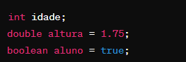
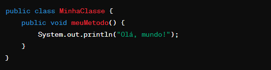
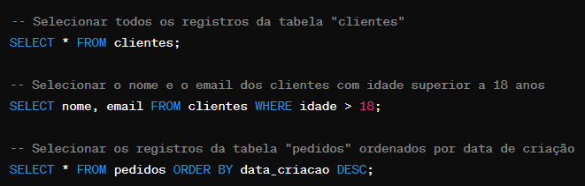
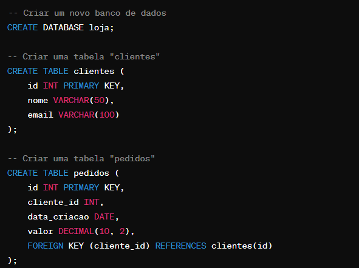
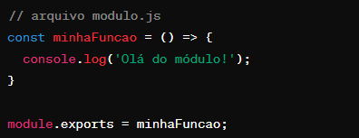
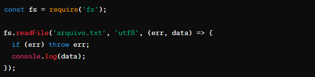

BACK-END
JAVA
Java é uma linguagem de programação orientada a objetos de uso geral, baseada em classes, projetada para ter menos dependências de implementação. É uma plataforma de computação para desenvolvimento de aplicativos. Java é rápido, seguro e confiável, portanto. É amplamente utilizado para desenvolver aplicações Java em laptops, data centers, consoles de jogos, supercomputadores científicos, telefones celulares, etc.
Sintaxe em Java
A sintaxe refere-se à forma como o código Java é escrito. Isso inclui a estrutura de declaração de variáveis, definição de métodos, classes, entre outros. Alguns pontos importantes da sintaxe Java incluem:
Tipos de dados
Java possui vários tipos de dados, incluindo tipos primitivos e tipos de referência. Alguns tipos de dados primitivos em Java incluem:
Variaveis
As variáveis são usadas para armazenar dados na memória durante a execução do programa. Em Java, as variáveis devem ser declaradas com um tipo específico e podem ser inicializadas com um valor opcional. Exemplos de declaração de variáveis em Java:
Estrutura de controle
As estruturas de controle permitem controlar o fluxo de execução do programa. As estruturas de controle básicas em Java incluem:
Metodos e classes
Em Java, os programas são organizados em classes. Uma classe é um modelo para objetos e define comportamentos e propriedades. Métodos são blocos de código que executam uma ação específica.
Esses são alguns dos conceitos básicos fundamentais que você precisa entender para começar a programar em Java. Compreender esses conceitos proporcionará uma base sólida para explorar tópicos mais avançados na linguagem.
Playlist para aprender mais sobre JAVA.
SQL
SQL (Structured Query Language) é uma linguagem de programação projetada para gerenciar e manipular dados em bancos de dados relacionais. Ele permite que os desenvolvedores realizem uma variedade de operações, como consultas, inserções, atualizações e exclusões, facilitando a interação com os bancos de dados.
Principais Conceitos e Funcionalidades
SQL oferece uma variedade de operações básicas para manipular dados em um banco de dados relacional:
Além das operações básicas, SQL inclui uma série de cláusulas e comandos para filtrar, ordenar e agrupar dados:
Chaves Primárias e Estrangeiras
Desenvolvimento de Consultas SQL
Consulta Simples
Criação de bancos de dados e tabelas
SQL é uma linguagem poderosa e versátil para gerenciar e manipular dados em bancos de dados relacionais. Com sua sintaxe simples, eficiente e abrangente, SQL é essencial para qualquer desenvolvedor que trabalhe com sistemas de banco de dados e aplicativos que exigem armazenamento e recuperação de dados estruturados.
Playlist para aprender mais sobre SQL.
NODE.JS
Node.js é um software de código aberto, multiplataforma, baseado no interpretador V8 do Google e que permite a execução de códigos JavaScript fora de um navegador web.
Módulos em Node.js:
Node.js possui um sistema de módulos que permite a organização do código em arquivos separados e reutilizáveis. Os módulos podem ser facilmente importados e exportados usando as palavras-chave require e module.exports.
Por exemplo, para exportar uma função ou variável de um módulo:
Eventos e Assincronicidade:
Node.js é baseado em eventos, o que significa que muitas das suas operações são assíncronas e orientadas a eventos. Isso permite que o Node.js seja altamente eficiente e escalável.
Operações assíncronas são comuns em Node.js e são tratadas usando callbacks, Promises ou async/await. Por exemplo, para ler um arquivo de forma assíncrona:
Dominar esses conceitos básicos de Node.js é essencial para entender como ele funciona e como aproveitar seu poder ao desenvolver aplicações robustas e eficientes. Essa base será fundamental para avançar nas etapas posteriores do seu aprendizado em Node.js.
Recursos Adicionais
Livros e Tutoriais Online: Procure por recursos como "Node.js in Action" ou tutoriais disponíveis gratuitamente no YouTube e em blogs.
Video Sobre Node,js.